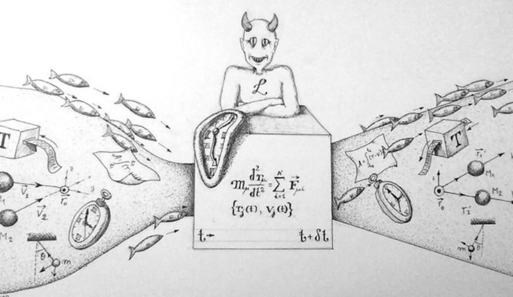
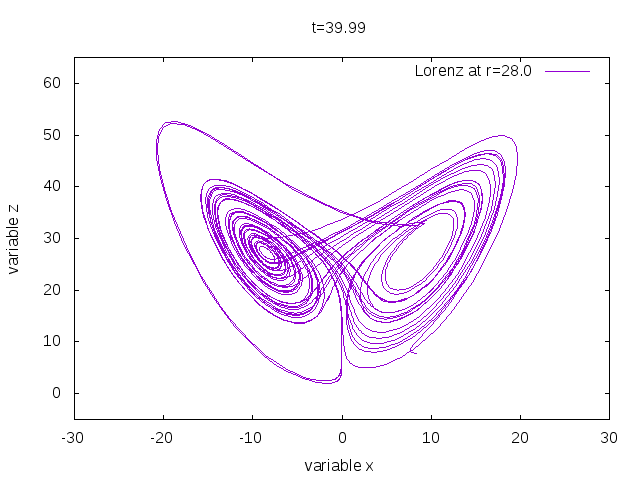

El determinismo de Newton-Laplace surgió como una ilusión de la predicción y control de lo que nos rodea. Este dio comienzo mediante la publicación de la obra en latín de Isaac Newton titulada "Philosophiæ Naturalis Principia Mathematica" en donde a través de tres volúmenes demostró matemáticamente la Ley de la Gravitación Universal, que explica la atracción entre dos cuerpos, dependiendo de sus masas y de la distancia que los separa. Del mismo modo, aportó las tres leyes de la dinámica que son enseñadas en todos los institutos y clases de física: la Ley de la Inercia, la Ley de la Fuerza Motriz y el Principio de Acción-Reacción.
A pesar de que se trataba de una obra científica, dio pie al nacimiento de una nueva corriente filosófica llamada determinismo mecanicista, que tenía raíces en el materialismo mecanicista expresado en el "Leviathan" por Thomas Hobbes, el cual postulaba que todo el universo era predecible. El determinismo mecanista compartía la idea de que el universo y todos sus organismos tienen mecanismos y leyes que se pueden pronosticar. Laplace mismo expresó sus pensamientos sobre el determinismo en sus "Ensayos filosóficos sobre las probabilidades" mediante el cual publicó: "Una inteligencia que por un instante conociera todas las fuerzas de la naturaleza, podría condensar al mismo tiempo el movimiento de los cuerpos del universo y de los componentes más pequeños del átomo. Nada sería incierto para ella y el futuro, como el pasado, estarían presentes ante sus ojos". A esta cita famosa se le conoce como el surgimiendo del Demonio de Laplace un ser que de cierta forma conoce la posición y la velocidad de todas las partículas del universo, además del pasado y como este desemboca en el presente, por lo que conocería el desenlace del universo. Este demonio fue la idea del determinismo, es decir, creer que el pasado determina por completo el futuro.
Lo anterior, tuvo una gran influencia en el curso de las ciencias físicas en las décadas siguientes, hasta que a finales de los 1800 los científicos y matemáticos comenzaron a descubrir ciertas ecuaciones bastante difíciles de resolver, en muchos casos, imposibles. Las ecuaciones diferenciales no lineales. Además de ello, existía el problema de los tres cuerpos que planteaba la tarea de determinar cómo un conjunto de objetos masivos se mueven bajo sus fuerzas gravitacionales mutuas. Todo esto durante mucho tiempo fue ignorado ya que representaba un dolor de cabeza para los matemáticos y físicos de la época, tiempo después vendrían y se abordarán conceptos como el "caos" que ponían en manifiesto que el mundo de Laplace o su demonio, no estaría del todo predeterminado. Abría luz a la posibilidad, la estabilidad y la incertidumbre.
Se sabe que la mecánica clásica o de Newton apoyaba firmemente la idea del determinismo. Siendo que las leyes de la naturaleza específican completamente el pasado y el futuro de todos los fenómenos naturales. No obstante, debido a los problemas matemáticos y físicos las corrientes del pensamiento rechazaron la idea de este mundo determinista y en su lugar surgió una mecánica con predicciones meramente estadísticas llamada mecánica cuántica.
Uno de los pioneros de esta rama de la física fue W. Heissenberg que junto con aportaciones de E. Schrödinger y N. Bohr llevaron a enunciar el Pincipio de Incertidumbre. Este nos dice que "Es imposible construir un aparato para el cual las incertidumbres calculadas, no obedezcan que el producto de dichas incertidumbres sea mayor o igual que la constante de Planck h", que puede ser expresada matemáticamente como:
donde se representan las incertidumbres p y q de diferentes propiedades de una partícula y h como la constante de Planck. Este principio, no podía ser sustentado por la Teoría de Probabilidades que existía en ese entonces, sino que fue necesario mejorar y llegar al modelo conmutativo el cual fue adoptado a partir de 1980 aproximadamente. Este modelo, aún vigente, permite dar cuenta de todas las leyes del azar que se conocen (la Segunda Ley de la Termodinámica, la Ley de los Grandes Números, el Pincipio de Incertidumbre, etc.). En síntesis, con la mecánica cuántica se inicia la era estadística y probabilistica en la cual ya nada tenía que ver con el determinismo.
Actualmente la palabra caos suele atribuirse ya sea a confusión, desorden o a un estado amorfo e indefinido que se supone anterior a la constitución del cosmos. Este término se estuvo usando de manera irregular atribuyendo principalmente para describir sistemas físicos reales, por ejemplo, Lorenz enunció que "Parece apropiado denominar caótico a un sistema físico real, si un modelo del mismo suficientemente realista, del que se haya suprimido la aleatoriedad inherente al mismo, sigue aparentando comportamiento aleatorio". Con ello, Lorenz estaba haciendo alusión sin saberlo a las ideas exploradas en el mundo de las Matemáticas en el siglo XIX.
Un sistema se dice caótico cuando el conjunto de estado de fases en el cual se presenta el fenómeno de dependencia que es sensible a las condiciones iniciales, viene acompañado de otras condiciones iniciales. Siendo, por ejemplo, un conjunto que tiende a evolucionar o conjunto atractor para todas o para la mayor parte de sus trayectorias. Dicha porción en el espacio de fases tiene generalmente una estructura geométrica y topológica con una dinámica de alto grado de complegidad. Estos conjuntos fueron precisamente los atractores extraños ya que tienen una estructura y apariencia peculiar.
Fue Edward Lorenz quien habló de estas estructuras. Era un meteorólogo del Instituto Tecnológico de Massachussetts que estaba interesado en la convección atmosférica y que redujó el marco de trabajo al estudio de la evolución temporal en tres dimensiones de un sistema de tres ecuaciones diferenciales ordinales con parámetros. Con ayuda de un ordenador y el método de Runge-Kutta de cuarto orden se obtuvieron simulaciones como las de la Figura 2 que desde ese entonces son llamados atractores de Lorenz.
El segundo problema de Hilbert o al menos como él lo sugirió fue "Investigar la consistencia de los axiomas de la aritmética", es decir, que la aritmética es un sistema formal que no supone una contradicción. Aún no ha sido resulto pero condujo a dos de los más importantes de la lógica y matemática modernas: los teoremas de Gödel.
Dichos teoremas son bastante populares ya que suelen ser invocados en el área de la lógica, las matemáticas, la computación o la filosofía, incluso en el área de la política, entre otras. Esto por el hecho de que ayudan a demostrar algo o a demostrar que algo no puede ser demostrado. El primero de los teoremas (la proposición o teorema VI) establece que si satisface la propiedad denominada ω-consistencia (omega consistencia), entonces se dice que este sistema es incompleto, queriendo decir con ello que hay una proposición conocida como “proposición Gödel” que no se puede probar ni refutar dentro de este mismo sistema. De manera que se dice que esta proposición es “indecidible” dentro de él, en pocas palabras, no es posible concluir si es verdadera o falsa.
El segundo teorema de la incompletud nos dice que la consistencia del sistema no puede ser establecida dentro del propio sistema. Es una consecuencia del primer teorema o mejor dicho, un corolario (corresponde a la proposición o teorema XI). Cabe señalar que “consistencia” quiere decir que no se puede formular en su lenguaje una proposición tal que ella y su negación queden demostradas en su interior. Siendo que que “cualquiera de los sistemas, si es consistente, es incompleto y su consistencia no puede ser probada dentro del propio sistema”.
Lo discutido en cada una de las secciones nos da la posibilidad de evaluar o conceptualizar las aplicaciones de los teoremas, corolarios, preposiciones y todas las teorías matemáticas con las cuales se ha abierto camino el ser humano y ha comprendido un poco más de la naturaleza en la que vivimos.
Alarcón-Nivia, M. (2015). EL DETERMINISMO DE NEWTON-LAPLACE EN EL DERECHO POSITIVO DE LA LEGISLACIÓN COLOMBIANA FRENTE A LA INCERTIDUMBRE DE HEISENBERG EN EL EJERCICIO MÉDICO. Revista Colombiana de Obstetricia y Ginecología, Vol. 66, No. 2, (116-123). DOI: http://dx.doi.org/10.18597/rcog.14
Balibrea, F. (s.f.). Caos y atractores extraños: Dos problemas no lineales en matemáticas. Universidad Pedagógica y Tecnológica de Colombia. Obtenido de https://virtual.uptc.edu.co/ova/estadistica/docs/autores/pag/mat/Historia21.pdf
Ferrer, A. (s.f.). EL PRINCIPIO DE INCERTIDUMBRE, LA INCERTEZA EN FÍSICA Y LA VISIÓN DE PETER LANDSBERG. Pontificia Universidad Católica de Chile: Facultad de Matemáticas. Obtenido de https://www.mat.uc.cl/~rolando.rebolledo/Azar/Trabajos/Ferrer.pdf
Harada, E. (s.f.). Gödelitis: usos y abusos. Universidad Autónoma de México: Escuela Nacional Preparatoria. Obtenido de https://elementos.buap.mx/post.php?id=573
Puga, A. (s.f.). El Demonio de Laplace. Universidad Autónoma de Zacatecas. Obtenido de https://puga.uaz.edu.mx/project/el-demonio-de-laplace/
Ríos, M. (2009). Marco conceptual epistemológico del principio de incertidumbre de W. Heisenberg: aporte pedagógico. Universidad Nacional Mayor de San Marcos: Facultad de Ciencias Físicas. Obtenido de https://cybertesis.unmsm.edu.pe/bitstream/handle/20.500.12672/15082/Rios_qm.pdf?sequence=1&isAllowed=y
Torres, C. (1999). El segundo problema de Hilbert sobre la compatibilidad de los axiomas de la aritmética. Miscelánea Matemática, Vol. 29, (73-97). https://miscelaneamatematica.org/download/tbl_articulos.pdf2.8d9dd56f1f0d6c29.746f727265735f612e706466.pdf
Wernecke, H. (2018). Lorenz system: An interactive simulation of a chaotic attractor. Goethe University Frankfurt. Obtenido de https://itp.uni-frankfurt.de/~gros/Vorlesungen/SO/simulation_example/